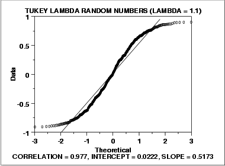

1.3. EDA Techniques
1.3.3. Graphical Techniques: Alphabetic
1.3.3.21. Normal Probability Plot
1.3.3.21.2. |
Normal Probability Plot: Data Have Short Tails |
 parameter equal
to 1.1.
parameter equal
to 1.1.

- The normal probability plot shows a non-linear pattern.
- The normal distribution is not a good model for these data.
In this case, we can reasonably conclude that the normal distribution does not provide an adequate fit for this data set. For probability plots that indicate short-tailed distributions, the next step might be to generate a Tukey Lambda PPCC plot. The Tukey Lambda PPCC plot can often be helpful in identifying an appropriate distributional family.